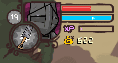

Lives/Health
Genre: All

Most games have a life or health system, an allowance of how many mistakes can be made in the game before the "game over." Classic games tend towards a life system, where most mistakes will instantly kill the character, subtract a life, and resume gameplay, usually at a checkpoint. Health can usually be tracked in larger units, percentages, or even discrete chunks. As long as it doesn't reach zero, the player is usually free to play as normal, and there is often a way to replenish lost health. This is more common in modern games and it helps to keep the flow of gameplay going in spite of mistakes, and even allows for games to be less forgiving with penalties, because there is no forced restart after a single slip-up.